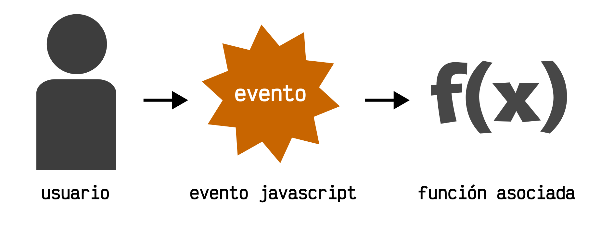

Un evento Javascript es una característica especial que ha sucedido en nuestra página y a la cuál le asociamos una funcionalidad, de modo que se ejecute cada vez que suceda dicho evento. Por ejemplo, el evento click se dispara cuando el usuario hace click en un elemento de nuestra página.
Dichas características pueden ser muy variadas:
- Click de ratón del usuario sobre un elemento de la página
- Pulsación de una tecla específica del teclado
- Reproducción de un archivo de audio/video
- Scroll de ratón sobre un elemento de la página
- El usuario ha activado la opción «Imprimir página»
Como desarrolladores, nuestro objetivo es preparar nuestro código para que cuando ocurra un determinado evento, se lleve a cabo una funcionalidad asociada. De esta forma, podemos preparar nuestra página o aplicación para que cuando ocurran ciertos eventos (que no podemos predecir de otra forma), reaccionen a ellos.
Uno de los eventos más comunes, es el evento click, que es el que se produce cuando el usuario hace click con el ratón en un elemento de la página. Vamos a utilizar este evento a modo de ejemplo en las siguientes secciones de la página, pero recuerda que hay muchos tipos de eventos diferentes.
Formas de manejar eventos
Existen varias formas diferentes de manejar eventos en Javascript. Vamos a ver cada una de ellas, con sus particularidades, pero antes hagamos un pequeño resumen:
| Forma | Ejemplo | Artículo en profundidad |
|---|---|---|
| Mediante atributos HTML | .onclick = function() { ... } |
Eventos JS desde atributos HTML |
| Mediante propiedades Javascript | <button onClick="..."></button> |
Eventos JS desde propiedades JavaScript |
| Mediante addEventListener() | .addEventListener("click", ...) |
Eventos JS desde listeners |